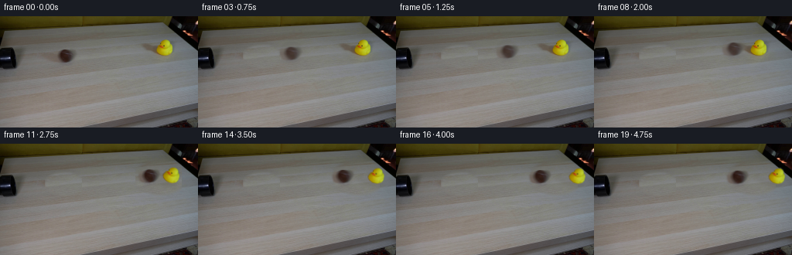
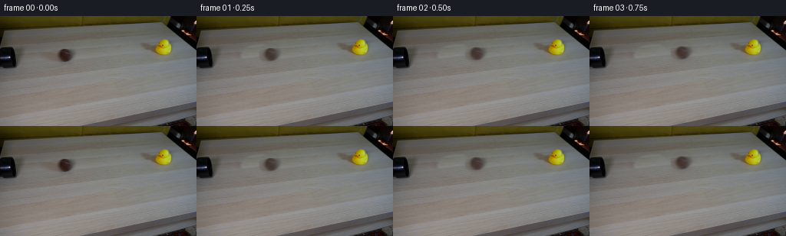
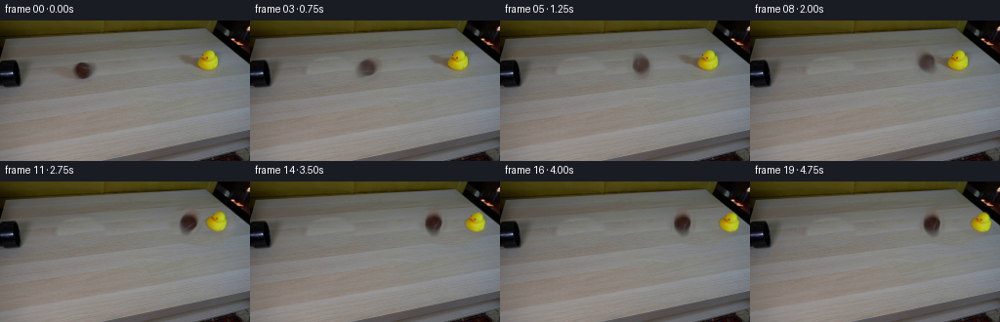
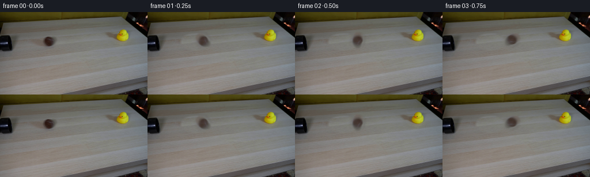
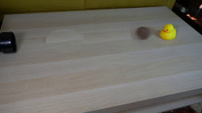
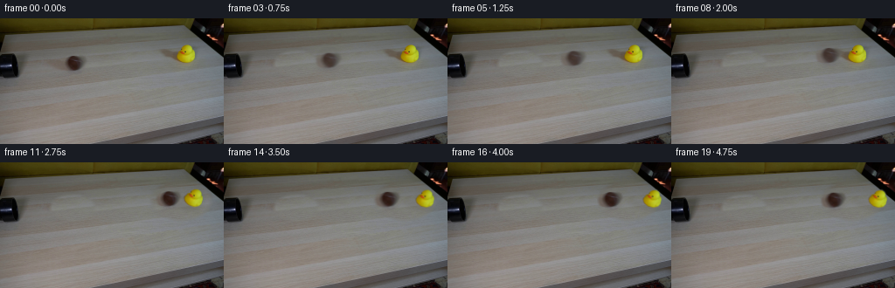
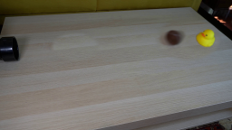

CODING AGENTS AS PIXEL WORLD MODELS
traex/GPT-5.6-Sol · 0007
点击播放 · 原生 RGB 像素
逐轮保存的候选
回放视频、检查图与代码变化。
每份候选均可单独播放。实际图片检查记录在下方工具轨迹中。
候选 01播放与检查图
点击播放 · 原生 RGB 像素

展开代码变化
--- 上一保存版本
+++ 本次保存版本
@@ -0,0 +1,165 @@
+from pathlib import Path
+import cv2
+import numpy as np
+from PIL import Image
+import artifact_io
+
+ROOT = Path(__file__).resolve().parent
+
+
+def soft_ellipse(h, w, cx, cy, rx, ry, feather=2.0):
+ yy, xx = np.mgrid[:h, :w]
+ d = np.sqrt(((xx-cx)/rx)**2 + ((yy-cy)/ry)**2)
+ return np.clip((1.0 + feather/max(rx,ry) - d) * max(rx,ry)/feather, 0, 1).astype(np.float32)
+
+
+def donor_clean(im, mask, dx):
+ """Replace a small object by same-row tabletop texture from dx pixels away."""
+ h,w = im.shape[:2]
+ yy,xx = np.mgrid[:h,:w].astype(np.float32)
+ donor = cv2.remap(im, xx+dx, yy, cv2.INTER_LINEAR, borderMode=cv2.BORDER_REFLECT)
+ # Match local mean colour so the replacement respects the table's illumination.
+ ring = cv2.GaussianBlur(mask, (0,0), 6) - cv2.GaussianBlur(mask, (0,0), 2)
+ ring = np.maximum(ring,0)
+ # Texture cloning itself is more convincing than flat inpainting on wood grain.
+ a = np.clip(mask,0,1)[...,None]
+ return np.clip(im.astype(np.float32)*(1-a) + donor.astype(np.float32)*a,0,255).astype(np.uint8)
+
+
+def over(dst, src, alpha):
+ a = np.clip(alpha,0,1)[...,None].astype(np.float32)
+ return np.clip(dst.astype(np.float32)*(1-a) + src.astype(np.float32)*a,0,255).astype(np.uint8)
+
+
+def warp_layer(src, alpha, M, out_shape):
+ h,w = out_shape
+ s = cv2.warpAffine(src, M, (w,h), flags=cv2.INTER_LINEAR,
+ borderMode=cv2.BORDER_REFLECT)
+ a = cv2.warpAffine(alpha, M, (w,h), flags=cv2.INTER_LINEAR,
+ borderMode=cv2.BORDER_CONSTANT, borderValue=0)
+ return s,a
+
+
+def draw_shadow(frame, cx, cy, tilt=0.0, strength=1.0):
+ """Soft contact/cast shadow of the duck, falling toward lower-left as in frame 0."""
+ h,w = frame.shape[:2]
+ layer = np.zeros((h,w), np.float32)
+ # Contact shadow plus a tapered cast shadow toward the left.
+ pts = np.array([[cx-3,cy-1],[cx-11,cy-6],[cx-28,cy-8],
+ [cx-14,cy+1],[cx+8,cy+3]], np.int32)
+ cv2.fillConvexPoly(layer, pts, .24*strength)
+ cv2.ellipse(layer, (int(cx),int(cy)), (11,3), 0,0,360,.30*strength,-1)
+ layer = cv2.GaussianBlur(layer,(0,0),3.0)
+ shade = np.zeros_like(frame)+np.array([79,73,58],np.uint8)
+ return over(frame, shade, layer)
+
+
+def build_frames():
+ im = np.asarray(Image.open(ROOT/'first_frame.png').convert('RGB'))
+ h,w = im.shape[:2]
+
+ # Broad erasure masks include the real diffuse shadows; donor pixels are sampled
+ # along the grain direction so tabletop bands and perspective remain continuous.
+ yy,xx = np.mgrid[:h,:w]
+ ball_erase = soft_ellipse(h,w,82.5,51.5,23,14,5)
+ ball_erase *= ((xx>57)&(xx<106)&(yy>34)&(yy<68)).astype(np.float32)
+ clean_ball = donor_clean(im, ball_erase, 52)
+
+ duck_erase = soft_ellipse(h,w,207,43,31,21,6)
+ duck_erase *= ((xx>174)&(xx<235)&(yy>18)&(yy<67)).astype(np.float32)
+ clean_all = donor_clean(clean_ball, duck_erase, -57)
+
+ # Ball cutout. The first-frame ball is intentionally soft from real motion blur;
+ # retain that photographic texture and feather only its outer edge.
+ ball_alpha = soft_ellipse(h,w,84.0,51.0,12.5,12.0,3.3)
+ ball_alpha *= ((xx>68)&(xx<100)&(yy>36)&(yy<66)).astype(np.float32)
+ # Suppress copied tabletop where the object is absent while retaining blurry edge.
+ diffb = np.max(np.abs(im.astype(np.int16)-clean_ball.astype(np.int16)),axis=2).astype(np.float32)
+ confidence = np.clip((diffb-2)/18,0,1)
+ ball_alpha *= np.maximum(.42, confidence)
+
+ # Duck silhouette from its saturated yellow pixels, then close/fill so black eyes
+ # and orange beak remain integral details of the sprite.
+ hsv = cv2.cvtColor(im, cv2.COLOR_RGB2HSV)
+ seed = (((hsv[...,0]>20)&(hsv[...,0]<45)&(hsv[...,1]>110)&
+ (hsv[...,2]>100)) & (xx>192)&(xx<230)&(yy>20)&(yy<60)).astype(np.uint8)*255
+ seed = cv2.morphologyEx(seed, cv2.MORPH_CLOSE, np.ones((5,5),np.uint8))
+ contours,_ = cv2.findContours(seed,cv2.RETR_EXTERNAL,cv2.CHAIN_APPROX_SIMPLE)
+ solid = np.zeros((h,w),np.uint8)
+ cv2.drawContours(solid,[max(contours,key=cv2.contourArea)],-1,255,-1)
+ # Include the protruding orange beak explicitly.
+ cv2.ellipse(solid,(208,40),(5,3),0,0,360,255,-1)
+ duck_alpha = cv2.GaussianBlur(solid.astype(np.float32)/255,(0,0),.65)
+ duck_alpha[duck_alpha>.96]=1
+
+ frames=[im.copy()]
+
+ # Straight, constant-speed run from the pipe toward the duck. At 4 fps the 12 px
+ # increments read as a plausible tabletop tennis-ball roll.
+ pre_x = {i:84 + 12*i for i in range(1,9)}
+ # Contact and rebound centres. Duck begins responding immediately after contact.
+ post_ball = {9:190.0, 10:195.0, 11:193.0, 12:190.5, 13:188.8,
+ 14:187.5, 15:186.8, 16:186.3, 17:186.0, 18:185.8, 19:185.7}
+ # x translation, clockwise lean. Damped wobble while sliding to the right.
+ duck_motion = {
+ 10:(2.0,-7.0),11:(6.0,-17.0),12:(10.0,-25.0),13:(13.0,-19.0),
+ 14:(16.0,-10.0),15:(18.0,-17.0),16:(19.5,-13.0),17:(20.5,-15.0),
+ 18:(21.0,-14.0),19:(21.3,-14.5)
+ }
+
+ for i in range(1,20):
+ impacted = i>=10
+ frame=(clean_all if impacted else clean_ball).copy()
+
+ # Duck shadow and transformed duck after impact. Before that the source duck
+ # remains exactly in place as part of clean_ball.
+ if impacted:
+ tx,ang=duck_motion[i]
+ frame=draw_shadow(frame, 212+tx, 51, ang, strength=max(.78,1-.012*tx))
+ pivot=(211.5,51.5)
+ M=cv2.getRotationMatrix2D(pivot,ang,1.0)
+ M[0,2]+=tx
+ # A tiny upward bob accompanies the first recoil, then gravity settles it.
+ bob={10:-.5,11:-1.0,12:-.5,13:0,14:.3,15:.2}.get(i,.3)
+ M[1,2]+=bob
+ ds,da=warp_layer(im,duck_alpha,M,(h,w))
+ frame=over(frame,ds,da)
+
+ # The ball path rises ten pixels in screen space, matching the straight line on
+ # the perspective tabletop between its initial centre and the duck.
+ bx=pre_x[i] if i in pre_x else post_ball[i]
+ by=51.0 - (bx-84.0)*(10.0/106.0)
+ if i>=10:
+ by=41.0 + (i-10)*.18
+ dx=bx-84.0; dy=by-51.0
+
+ # Mild directional exposure blur: several close samples of the same cutout.
+ # It also conceals subpixel aliasing without disturbing the locked background.
+ if i<=9:
+ offsets=(-1.15,0,1.15); weights=(.24,.52,.24)
+ elif i==10:
+ offsets=(-.7,0,.7); weights=(.2,.6,.2)
+ else:
+ offsets=(0,); weights=(1,)
+ for off,wt in zip(offsets,weights):
+ M=np.array([[1,0,dx+off],[0,1,dy]],np.float32)
+ bs,ba=warp_layer(im,ball_alpha,M,(h,w))
+ frame=over(frame,bs,ba*wt)
+
+ # At contact the near lower body of the duck naturally occludes a small part
+ # of the ball; redraw the transformed sprite very lightly only for these frames.
+ if i in (10,11):
+ tx,ang=duck_motion[i]
+ M=cv2.getRotationMatrix2D((211.5,51.5),ang,1.0); M[0,2]+=tx
+ M[1,2]+={10:-.5,11:-1.0}[i]
+ ds,da=warp_layer(im,duck_alpha,M,(h,w))
+ frame=over(frame,ds,da)
+
+ frames.append(frame)
+ return np.stack(frames).astype(np.uint8)
+
+
+if __name__=='__main__':
+ frames=build_frames()
+ assert np.array_equal(frames[0],np.asarray(Image.open(ROOT/'first_frame.png').convert('RGB')))
+ artifact_io.save(frames,ROOT)
候选 02播放与检查图
点击播放 · 原生 RGB 像素


展开代码变化
--- 上一保存版本
+++ 本次保存版本
@@ -62,11 +62,9 @@
# along the grain direction so tabletop bands and perspective remain continuous.
yy,xx = np.mgrid[:h,:w]
ball_erase = soft_ellipse(h,w,82.5,51.5,23,14,5)
- ball_erase *= ((xx>57)&(xx<106)&(yy>34)&(yy<68)).astype(np.float32)
clean_ball = donor_clean(im, ball_erase, 52)
duck_erase = soft_ellipse(h,w,207,43,31,21,6)
- duck_erase *= ((xx>174)&(xx<235)&(yy>18)&(yy<67)).astype(np.float32)
clean_all = donor_clean(clean_ball, duck_erase, -57)
# Ball cutout. The first-frame ball is intentionally soft from real motion blur;
候选 03播放与检查图
点击播放 · 原生 RGB 像素


展开代码变化
--- 上一保存版本
+++ 本次保存版本
@@ -140,7 +140,10 @@
else:
offsets=(0,); weights=(1,)
for off,wt in zip(offsets,weights):
- M=np.array([[1,0,dx+off],[0,1,dy]],np.float32)
+ # Clockwise spin is coupled analytically to distance travelled (no
+ # sliding); after the collision the small leftward rebound reverses it.
+ M=cv2.getRotationMatrix2D((84.0,51.0),-dx*4.5,1.0)
+ M[0,2]+=dx+off; M[1,2]+=dy
bs,ba=warp_layer(im,ball_alpha,M,(h,w))
frame=over(frame,bs,ba*wt)
可观测工具轨迹
实际执行的命令与返回图片。
命令 1exit 0
/bin/bash -lc "cat prompt.txt && printf '\\n---RULES---\\n' && cat GENERATION_RULES.md"
命令 2exit 0
/bin/bash -lc "find . -maxdepth 2 -type f -printf '%p\\n' | sort"
命令 3exit 0
/bin/bash -lc "python - <<'PY'
from PIL import Image
im=Image.open('first_frame.png')
print(im.size, im.mode)
PY
which ffmpeg || true
which convert || true
python - <<'PY'
mods=['cv2','numpy','PIL','imageio','scipy']
for m in mods:
try:
x=__import__(m); print(m, getattr(x,'__version__','ok'))
except Exception as e: print(m,'ERR',e)
PY"命令 4exit 0
/bin/bash -lc "python - <<'PY'
from PIL import Image
im=Image.open('first_frame.png')
im.resize((1024,576)).save('.tmp/enlarged.png')
PY"命令 5exit 0
/bin/bash -lc 'cat artifact_io.py'
命令 6exit 1
/bin/bash -lc "cat > generate.py <<'PY'
from pathlib import Path
import cv2
import numpy as np
from PIL import Image
import artifact_io
ROOT = Path(__file__).resolve().parent
def soft_ellipse(h, w, cx, cy, rx, ry, feather=2.0):
yy, xx = np.mgrid[:h, :w]
d = np.sqrt(((xx-cx)/rx)**2 + ((yy-cy)/ry)**2)
return np.clip((1.0 + feather/max(rx,ry) - d) * max(rx,ry)/feather, 0, 1).astype(np.float32)
def donor_clean(im, mask, dx):
\"\"\"Replace a small object by same-row tabletop texture from dx pixels away.\"\"\"
h,w = im.shape[:2]
yy,xx = np.mgrid[:h,:w].astype(np.float32)
donor = cv2.remap(im, xx+dx, yy, cv2.INTER_LINEAR, borderMode=cv2.BORDER_REFLECT)
# Match local mean colour so the replacement respects the table's illumination.
ring = cv2.GaussianBlur(mask, (0,0), 6) - cv2.GaussianBlur(mask, (0,0), 2)
ring = np.maximum(ring,0)
# Texture cloning itself is more convincing than flat inpainting on wood grain.
a = np.clip(mask,0,1)[...,None]
return np.clip(im.astype(np.float32)*(1-a) + donor.astype(np.float32)*a,0,255).astype(np.uint8)
def over(dst, src, alpha):
a = np.clip(alpha,0,1)[...,None].astype(np.float32)
return np.clip(dst.astype(np.float32)*(1-a) + src.astype(np.float32)*a,0,255).astype(np.uint8)
def warp_layer(src, alpha, M, out_shape):
h,w = out_shape
s = cv2.warpAffine(src, M, (w,h), flags=cv2.INTER_LINEAR,
borderMode=cv2.BORDER_REFLECT)
a = cv2.warpAffine(alpha, M, (w,h), flags=cv2.INTER_LINEAR,
borderMode=cv2.BORDER_CONSTANT, borderValue=0)
return s,a
def draw_shadow(frame, cx, cy, tilt=0.0, strength=1.0):
\"\"\"Soft contact/cast shadow of the duck, falling toward lower-left as in frame 0.\"\"\"
h,w = frame.shape[:2]
layer = np.zeros((h,w), np.float32)
# Contact shadow plus a tapered cast shadow toward the left.
pts = np.array([[cx-3,cy-1],[cx-11,cy-6],[cx-28,cy-8],
[cx-14,cy+1],[cx+8,cy+3]], np.int32)
cv2.fillConvexPoly(layer, pts, .24*strength)
cv2.ellipse(layer, (int(cx),int(cy)), (11,3), 0,0,360,.30*strength,-1)
layer = cv2.GaussianBlur(layer,(0,0),3.0)
shade = np.zeros_like(frame)+np.array([79,73,58],np.uint8)
return over(frame, shade, layer)
def build_frames():
im = np.asarray(Image.open(ROOT/'first_frame.png').convert('RGB'))
h,w = im.shape[:2]
# Broad erasure masks include the real diffuse shadows; donor pixels are sampled
# along the grain direction so tabletop bands and perspective remain continuous.
yy,xx = np.mgrid[:h,:w]
ball_erase = soft_ellipse(h,w,82.5,51.5,23,14,5)
ball_erase *= ((xx>57)&(xx<106)&(yy>34)&(yy<68)).astype(np.float32)
clean_ball = donor_clean(im, ball_erase, 52)
duck_erase = soft_ellipse(h,w,207,43,31,21,6)
duck_erase *= ((xx>174)&(xx<235)&(yy>18)&(yy<67)).astype(np.float32)
clean_all = donor_clean(clean_ball, duck_erase, -57)
# Ball cutout. The first-frame ball is intentionally soft from real motion blur;
# retain that photographic texture and feather only its outer edge.
ball_alpha = soft_ellipse(h,w,84.0,51.0,12.5,12.0,3.3)
ball_alpha *= ((xx>68)&(xx<100)&(yy>36)&(yy<66)).astype(np.float32)
# Suppress copied tabletop where the object is absent while retaining blurry edge.
diffb = np.max(np.abs(im.astype(np.int16)-clean_ball.astype(np.int16)),axis=2).astype(np.float32)
confidence = np.clip((diffb-2)/18,0,1)
ball_alpha *= np.maximum(.42, confidence)
# Duck silhouette from its saturated yellow pixels, then close/fill so black eyes
# and orange beak remain integral details of the sprite.
hsv = cv2.cvtColor(im, cv2.COLOR_RGB2HSV)
seed = (((hsv[...,0]>20)&(hsv[...,0]<45)&(hsv[...,1]>110)&
(hsv[...,2]>100)) & (xx>192)&(xx<230)&(yy>20)&(yy<60)).astype(np.uint8)*255
seed = cv2.morphologyEx(seed, cv2.MORPH_CLOSE, np.ones((5,5),np.uint8))
contours,_ = cv2.findContours(seed,cv2.RETR_EXTERNAL,cv2.CHAIN_APPROX_SIMPLE)
solid = np.zeros((h,w),np.uint8)
cv2.drawContours(solid,[max(contours,key=cv2.contourArea)],-1,255,-1)
# Include the protruding orange beak explicitly.
cv2.ellipse(solid,(208,40),(5,3),0,0,360,255,-1)
duck_alpha = cv2.GaussianBlur(solid.astype(np.float32)/255,(0,0),.65)
duck_alpha[duck_alpha>.96]=1
frames=[im.copy()]
# Straight, constant-speed run from the pipe toward the duck. At 4 fps the 12 px
# increments read as a plausible tabletop tennis-ball roll.
pre_x = {i:84 + 12*i for i in range(1,9)}
# Contact and rebound centres. Duck begins responding immediately after contact.
post_ball = {9:190.0, 10:195.0, 11:193.0, 12:190.5, 13:188.8,
14:187.5, 15:186.8, 16:186.3, 17:186.0, 18:185.8, 19:185.7}
# x translation, clockwise lean. Damped wobble while sliding to the right.
duck_motion = {
10:(2.0,-7.0),11:(6.0,-17.0),12:(10.0,-25.0),13:(13.0,-19.0),
14:(16.0,-10.0),15:(18.0,-17.0),16:(19.5,-13.0),17:(20.5,-15.0),
18:(21.0,-14.0),19:(21.3,-14.5)
}
for i in range(1,20):
impacted = i>=10
frame=(clean_all if impacted else clean_ball).copy()
# Duck shadow and transformed duck after impact. Before that the source duck
# remains exactly in place as part of clean_ball.
if impacted:
tx,ang=duck_motion[i]
frame=draw_shadow(frame, 212+tx, 51, ang, strength=max(.78,1-.012*tx))
pivot=(211.5,51.5)
M=cv2.getRotationMatrix2D(pivot,ang,1.0)
M[0,2]+=tx
# A tiny upward bob accompanies the first recoil, then gravity settles it.
bob={10:-.5,11:-1.0,12:-.5,13:0,14:.3,15:.2}.get(i,.3)
M[1,2]+=bob
ds,da=warp_layer(im,duck_alpha,M,(h,w))
frame=over(frame,ds,da)
# The ball path rises ten pixels in screen space, matching the straight line on
# the perspective tabletop between its initial centre and the duck.
bx=pre_x.get(i,post_ball[i])
by=51.0 - (bx-84.0)*(10.0/106.0)
if i>=10:
by=41.0 + (i-10)*.18
dx=bx-84.0; dy=by-51.0
# Mild directional exposure blur: several close samples of the same cutout.
# It also conceals subpixel aliasing without disturbing the locked background.
if i<=9:
offsets=(-1.15,0,1.15); weights=(.24,.52,.24)
elif i==10:
offsets=(-.7,0,.7); weights=(.2,.6,.2)
else:
offsets=(0,); weights=(1,)
for off,wt in zip(offsets,weights):
M=np.array([[1,0,dx+off],[0,1,dy]],np.float32)
bs,ba=warp_layer(im,ball_alpha,M,(h,w))
frame=over(frame,bs,ba*wt)
# At contact the near lower body of the duck naturally occludes a small part
# of the ball; redraw the transformed sprite very lightly only for these frames.
if i in (10,11):
tx,ang=duck_motion[i]
M=cv2.getRotationMatrix2D((211.5,51.5),ang,1.0); M[0,2]+=tx
M[1,2]+={10:-.5,11:-1.0}[i]
ds,da=warp_layer(im,duck_alpha,M,(h,w))
frame=over(frame,ds,da)
frames.append(frame)
return np.stack(frames).astype(np.uint8)
if __name__=='__main__':
frames=build_frames()
assert np.array_equal(frames[0],np.asarray(Image.open(ROOT/'first_frame.png').convert('RGB')))
artifact_io.save(frames,ROOT)
PY
python generate.py
ffmpeg -y -framerate 4 -i frames/%02d.png -c:v libx264 -pix_fmt yuv420p .tmp/preview.mp4 >/dev/null 2>&1
python - <<'PY'
import numpy as np
from PIL import Image
x=np.load('pixels.npz')['pixels']; print(x.shape)
print('frame0 exact',np.array_equal(np.array(Image.open('frames/00.png')),np.array(Image.open('first_frame.png'))))
PY"命令 7exit 0
/bin/bash -lc "python - <<'PY'
p='generate.py'
s=open(p).read().replace(\"bx=pre_x.get(i,post_ball[i])\",\"bx=pre_x[i] if i in pre_x else post_ball[i]\")
open(p,'w').write(s)
PY
python generate.py
ffmpeg -y -framerate 4 -i frames/%02d.png -c:v libx264 -pix_fmt yuv420p .tmp/preview.mp4 >/dev/null 2>&1
python - <<'PY'
import numpy as np
from PIL import Image
x=np.load('pixels.npz')['pixels']; print(x.shape)
print('frame0 exact',np.array_equal(np.array(Image.open('frames/00.png')),np.array(Image.open('first_frame.png'))))
PY"命令 8exit 0
/bin/bash -lc 'python generate.py'
命令 9exit 0
/bin/bash -lc "python generate.py && python - <<'PY'
from pathlib import Path
from PIL import Image
import numpy as np
fs=sorted(Path('frames').glob('*.png'))
assert len(fs)==20, len(fs)
a=np.stack([np.array(Image.open(f)) for f in fs])
assert a.shape==(20,144,256,3) and a.dtype==np.uint8
assert np.array_equal(a[0],np.array(Image.open('first_frame.png')))
print('validated',a.shape,a.dtype,'exact first frame; outputs:',Path('pixels.npz').stat().st_size,'bytes')
PY"视觉工具实际返回图片 1

视觉工具实际返回图片 2

视觉工具实际返回图片 3

视觉工具实际返回图片 4
视觉工具实际返回图片 5

视觉工具实际返回图片 6

视觉工具实际返回图片 7

保存候选 3 份；完成命令 9 次；可验证图片返回 7 张。原始 API 响应与完整日志保留在本地。